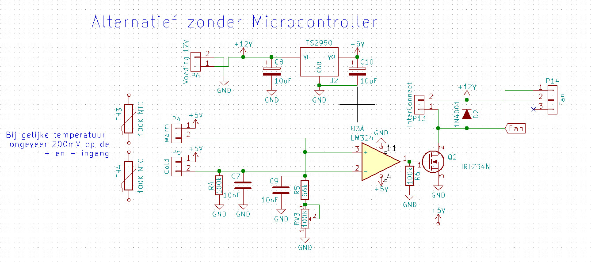
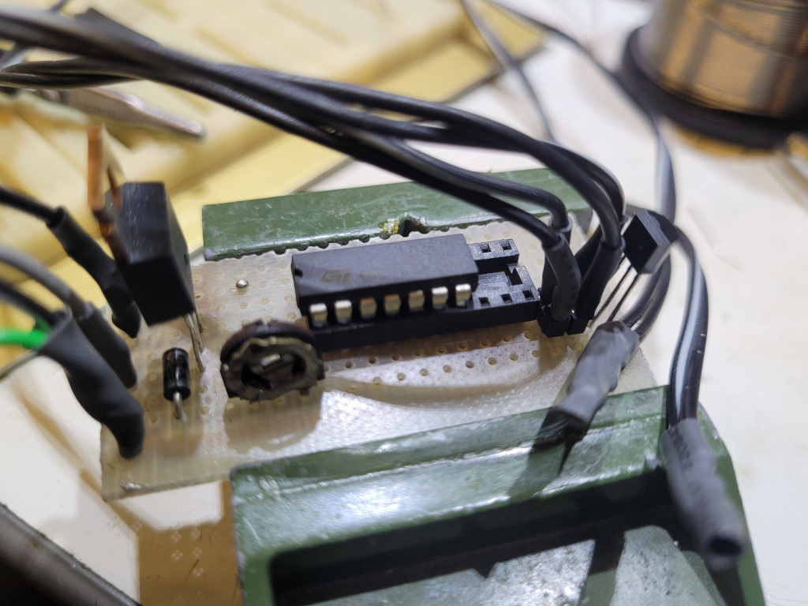

Voor diegene die geen toerental regeling nodig hebben kan men ook een simple opamp gebruiken zoals de LM324N. Ik maak ook hier gebruik van 2 temperatuur sensoren waardoor er maar een paar graden verschil nodig is om de ventilatoren aan
te laten gaan.

De voeding kan 12 of 9 volt zijn voor als je de ventilatoren iets langzamer wil laten lopen. Voor de TS2950
kan ook een LM78L05 gebruikt worden.
Hier is een impressie van het schakelingtje aan de linker kant zit de mosfet voor aan en uit schakelen. Een simpel
instel potmetertje is genoeg voor het instellen van de verschiltemperatuur. De LM324 zit hier in een te groot voetje
maar dat is wat ik even had liggen... En aan de rechterkant vind je de spanningsregelaar.

De twee sensortjes zitten in krimpkous voor electrisch bescherming.
Voor het monteren van de ventilatoren kan natuurlijk ook gewoon een stuk hout gebruikt worden met gaten voor de
lucht toevoer. Belangrijk is dat de ventilatoren geen mechanisch contact maken met de radiator want dat is een ideale
klankkast.
Terug